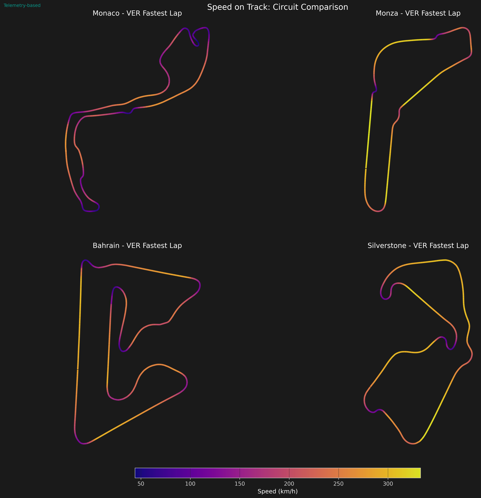
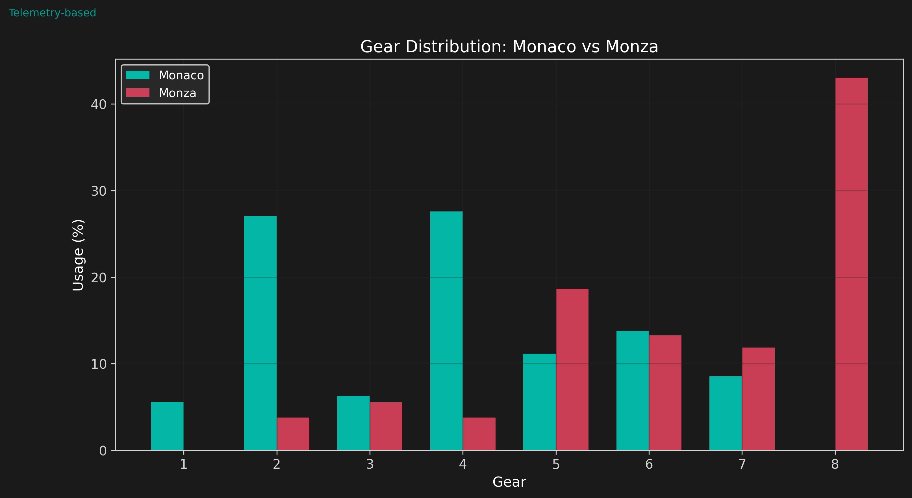
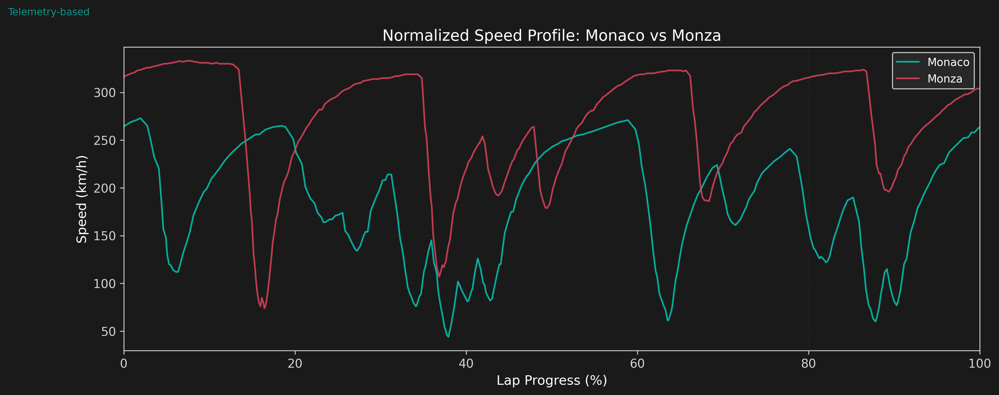
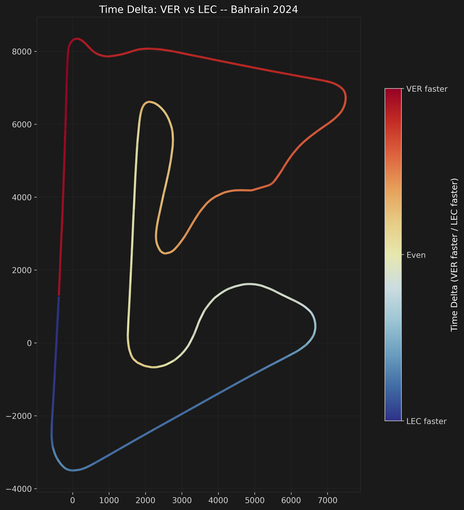

Track-Specific Aero Setups
The Setup Spectrum
Every F1 weekend, teams dial in a track-specific aero configuration that balances downforce (for cornering grip) against drag (for straight-line speed). The extremes of this spectrum are Monaco, requiring maximum downforce for tight corners, and Monza, where low drag is essential for the long straights.
In our model, the Monaco setup uses steep wing angles (front: -8 deg, rear: -17 deg) and a low ride height (35 mm) for maximum ground effect. The Monza setup uses shallow angles (front: -3 deg, rear: -8 deg) and a higher ride height (65 mm) to reduce drag, accepting lower cornering grip in exchange for higher top speed.
Synchronized Telemetry Explorer
Hover over the track map to see the corresponding telemetry data below, or hover over any telemetry trace to highlight the car's position on the track.
3D Performance Envelope
This 3D scatter plot shows the relationship between lateral G, longitudinal G, and speed -- the grip envelope of the F1 car. Use the dropdown to compare drivers.
- Lateral G (X-axis): Cornering force — how hard the car turns left or right.
- Longitudinal G (Y-axis): Braking (negative) and acceleration (positive) forces.
- Speed (Z-axis): Colored by the Turbo colormap — low speeds are dark, high speeds are bright.
The "bowl" shape emerges because downforce scales as v². At higher speeds (top of the plot), the car generates more downforce, allowing much higher lateral G-forces through corners. At low speeds, grip is purely mechanical (tires only), so the envelope narrows.
Speed on Track
Speed-colored track maps show the stark contrast between the two circuits. Monaco's lap is dominated by low-speed corners with brief acceleration zones, while Monza is a high-speed sweep with long straights.

Gear Distribution
Gear usage reveals the corner density of each circuit. Monaco rarely exceeds 6th gear, while Monza spends significant time in 8th gear.

Sector Speed Comparison
Dividing each lap into 5 equal-distance sectors reveals the contrasting speed profiles. Monaco's average speed is ~60 km/h lower across all sectors compared to Monza.

Aero Setup: Modeled Performance
The analytical model predicts the downforce and drag difference between the two setups. Monaco's high-downforce configuration produces approximately 2x the downforce of the Monza setup at equal speed, at the cost of 50-70% more drag.

Speed Profile Overlay
Normalizing both laps to 100% distance and overlaying the speed traces shows the extreme difference in circuit character.

Driver Time Delta Map
Beyond comparing circuits, we can compare drivers head-to-head on the same track. This track map colors each segment by the cumulative time delta between two drivers -- red where Verstappen is gaining, blue where Leclerc is gaining, gray where they are equal.
The time delta map reveals where driver skill and car performance interact. Long red streaks on straights show where one car has a straight-line speed advantage (lower drag or more power). Blue segments in corners indicate superior corner entry or exit technique.

Key Findings
- Setup range is extreme: Monaco produces ~2x the downforce of Monza at equal speed. This is the widest setup range in F1 between consecutive race weekends.
- Drag penalty is real: The high-downforce Monaco setup adds 50-70% more drag, but this is irrelevant at Monaco since top speed never exceeds 290 km/h.
- Gear utilization: Monaco stays in 2nd-4th gear for 70% of the lap. Monza uses 6th-8th gear for 60%+ of the lap. The gearbox ratios and final drive must match the aero setup.
- Sector speed gap: Monza's sector average speeds are 70-100 km/h higher than Monaco's in every sector, reflecting the fundamental difference in circuit types.
- Ride height tradeoff: Monaco's 35 mm ride height maximizes ground-effect downforce but risks plank wear. Monza's 65 mm setup reduces ground effect but is safer over kerbs.
Limitations
- The analytical model uses simplified wing and floor coefficients; real teams have detailed CFD and wind tunnel data for each circuit.
- Telemetry is from the fastest lap; setup data (ride height, wing angles) are assumed from typical values rather than team telemetry (which is proprietary).
- Only two circuits are compared; a full season analysis would show a continuous spectrum across 24 circuits with different aero demands.
- Weather, tire degradation, and traffic effects are not considered. Real setup choices are influenced by race strategy and expected conditions.
- The 1.5 Hz GPS telemetry resolution limits the granularity of speed profiling, especially at Monza where long straights are sparsely sampled.